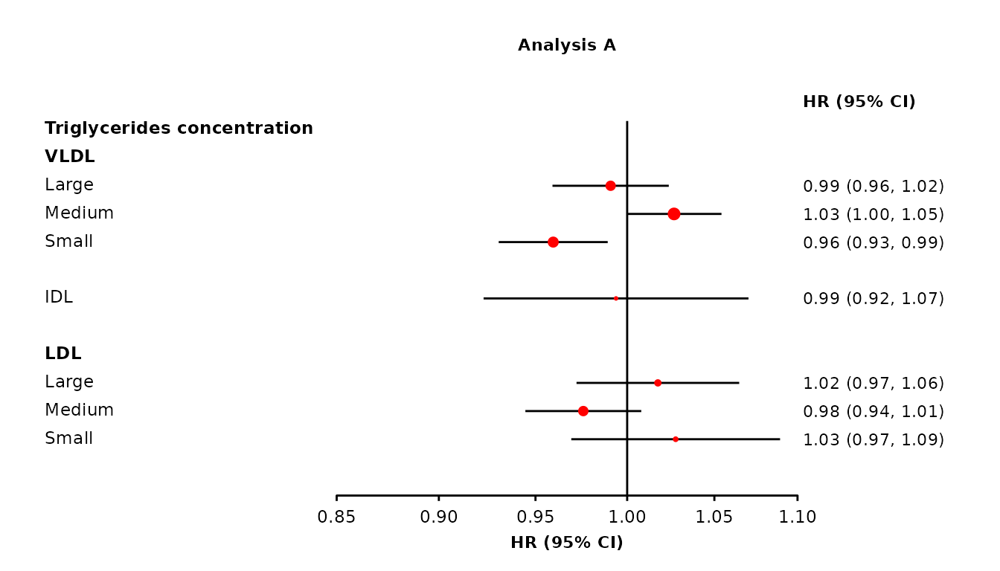
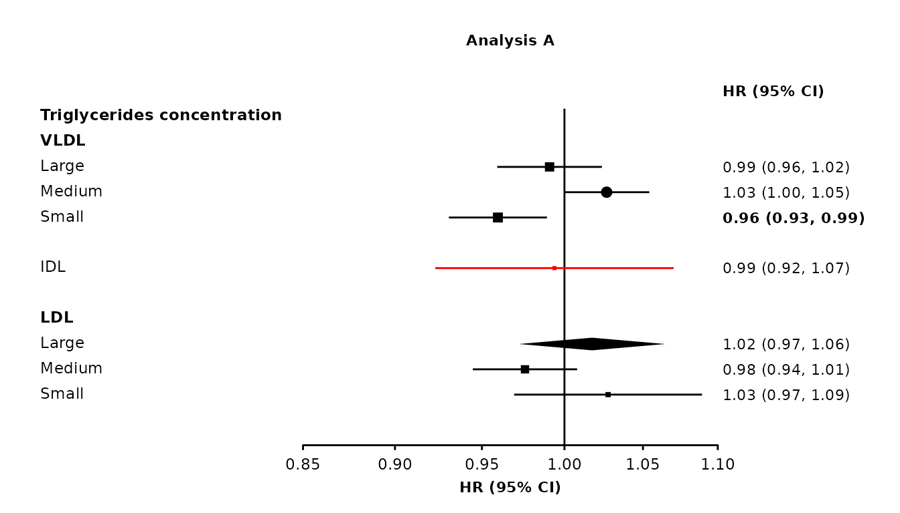

The make_forest_plot function creates a forest plot using the ggplot2 graphics package. It is available as part of the ckbplotr package.
The function returns a named list containing:
- plot: the plot
- data: a data frame from which the plot is generated
- code: ggplot2 code to generate the plot
In RStudio the ggplot2 code used to generate the plot will be shown in the ‘Viewer’ pane. If modifications are needed to the plot, then this code can be copied, edited, and run as needed.
Expected warning
You may get the following warning when using this function.
Vectorized input to
element_text()is not officially supported. Results may be unexpected or may change in future versions of ggplot2.
This is related to how some headings used to label the rows of the forest plot are made bold. This should not be a problem if the forest plot produced appears as expected. (This hack is discussed here.)
Prepare data
First of all, do your analyses and put the results into data frames (one data frame for each forest plot panel). Here we generate some example results.
set.seed(57911624)
exampleresults <- function(){
data.frame(variable = c('nmr_l_vldl_p', 'nmr_m_vldl_p', 'nmr_s_vldl_p',
'nmr_idl_p',
'nmr_l_ldl_p', 'nmr_m_ldl_p', 'nmr_s_ldl_p',
'nmr_l_vldl_tg', 'nmr_m_vldl_tg', 'nmr_s_vldl_tg',
'nmr_idl_tg',
'nmr_l_ldl_tg', 'nmr_m_ldl_tg', 'nmr_s_ldl_tg',
'nmr_l_vldl_c', 'nmr_m_vldl_c', 'nmr_s_vldl_c',
'nmr_idl_c',
'nmr_l_ldl_c', 'nmr_m_ldl_c', 'nmr_s_ldl_c'),
estimate = rnorm(21, 0, 0.02),
stderr = 0.012 + abs(rnorm(21, 0, 0.015)),
n = round(runif(21, 100, 2000)),
nb = round(runif(21, 100, 2000)),
shape = rep(15, 21),
colour = "black",
fill = "black",
bold = FALSE,
diamond = FALSE,
ciunder = FALSE,
stringsAsFactors = FALSE)
}
resultsA <- exampleresults()
resultsB <- exampleresults()
resultsC <- exampleresults()
resultsD <- exampleresults()
resultsE <- exampleresults()
resultsA[9,"shape"] <- 16
resultsA[10, "bold"] <- TRUE
resultsA[11, "colour"] <- "red"
resultsA[12, "diamond"] <- TRUE
resultsA[13, "ciunder"] <- TRUE
resultsA[13, "shape"] <- 22
resultsA[13, "fill"] <- "white"Simple forest plot
forestplot <- make_forest_plot(panels = list(resultsA, resultsB),
col.key = "variable",
panel.headings = c("Analysis A", "Analysis B"),
exponentiate = TRUE)
#> Warning: Vectorized input to `element_text()` is not officially supported.
#> Results may be unexpected or may change in future versions of ggplot2.
Forest plot with row labels
To use row labels, create a data frame of labels and specify arguments row.labels and rows.
This data frame must contain columns ‘heading1’, ‘heading2’ and ‘heading3’, which can be set to NA if not needed for a particular row. For example, if you do not need a third level of label for a particular row, then set heading3=NA for that row. If you only need one level of labels, then set heading2=NA and heading3=NA for every row.
The data set must also contain a column with the same name as a column in each of the results data sets. This column is used to match labels to the correct results, and is specified in the argument col.key.
The argument rows specifies which results should be included in the plot, by giving labels from the heading1 column of the row.labels data frame.
(The order given in the rows argument decides the order in which the heading1 labels will be in the plot (top to bottom). The heading2 and heading3 labels will be in the order that they are in the row.labels data frame.)
#> heading1 heading2 heading3 variable
#> 1 Lipoprotein particle concentration VLDL Large nmr_l_vldl_p
#> 2 Lipoprotein particle concentration VLDL Medium nmr_m_vldl_p
#> 3 Lipoprotein particle concentration VLDL Small nmr_s_vldl_p
#> 4 Lipoprotein particle concentration IDL <NA> nmr_idl_p
#> 5 Lipoprotein particle concentration LDL Large nmr_l_ldl_p
#> 6 Lipoprotein particle concentration LDL Medium nmr_m_ldl_p
#> 7 Lipoprotein particle concentration LDL Small nmr_s_ldl_p
#> 8 Triglycerides concentration VLDL Large nmr_l_vldl_tg
#> 9 Triglycerides concentration VLDL Medium nmr_m_vldl_tg
#> 10 Triglycerides concentration VLDL Small nmr_s_vldl_tg
#> 11 Triglycerides concentration IDL <NA> nmr_idl_tg
#> 12 Triglycerides concentration LDL Large nmr_l_ldl_tg
#> 13 Triglycerides concentration LDL Medium nmr_m_ldl_tg
#> 14 Triglycerides concentration LDL Small nmr_s_ldl_tg
#> 15 Cholesterol concentration VLDL Large nmr_l_vldl_c
#> 16 Cholesterol concentration VLDL Medium nmr_m_vldl_c
#> 17 Cholesterol concentration VLDL Small nmr_s_vldl_c
#> 18 Cholesterol concentration IDL <NA> nmr_idl_c
#> 19 Cholesterol concentration LDL Large nmr_l_ldl_c
#> 20 Cholesterol concentration LDL Medium nmr_m_ldl_c
#> 21 Cholesterol concentration LDL Small nmr_s_ldl_c
forestplot <- make_forest_plot(panels = list(resultsA, resultsB),
col.key = "variable",
row.labels = mylabels,
rows = c("Lipoprotein particle concentration",
"Triglycerides concentration"),
exponentiate = TRUE,
panel.names = c("Analysis A", "Analysis B"),
ci.delim = " - ",
xlim = c(0.9, 1.1),
xticks = c(0.9, 1, 1.1),
blankrows = c(1, 1, 0, 1),
scalepoints = TRUE,
pointsize = 3,
col.left = c("n"),
col.left.space = c(0.02),
col.left.heading = c("No. of\nevents"),
col.right.space = 0.02,
col.heading.space = 1.5,
label.space = 2,
panel.space = 8)
#> Warning: Vectorized input to `element_text()` is not officially supported.
#> Results may be unexpected or may change in future versions of ggplot2.
Setting colours and shapes, bold text and diamonds
The shape and fill colour of points, colour of points and confidence interval lines, bold text, and which estimates/CIs should be plotted as diamonds can be set overall or on a per-point basis. This is done by setting arguments shape, colour, fill, ciunder, col.bold, and col.diamond to appropriate values, or to the name of a column containing values for each point.
The argument/columns, what they control, and the type:
| argument | controls | type |
|---|---|---|
| shape | plotting character for points | integer |
| colour | colour of points and lines | character |
| fill | fill colour of points | character |
| ciunder | if the CI line should be plotted before the point | logical |
| col.bold | if text is bold | logical |
| col.diamond | if a diamond should be plotted | logical |
Note that col.bold, and col.diamond must be column names in the supplied data frames, while the others can be fixed values or column names.
Using values
forestplot1 <- make_forest_plot(panels = list(resultsA),
col.key = "variable",
row.labels = mylabels,
rows = c("Triglycerides concentration"),
exponentiate = TRUE,
panel.names = c("Analysis A"),
ci.delim = " - ",
xlim = c(0.9, 1.1),
xticks = c(0.9, 1, 1.1),
blankrows = c(0, 1, 0, 1),
scalepoints = TRUE,
pointsize = 3,
col.left = c("n"),
col.left.space = c(0.02),
col.left.heading = c("No. of\nevents"),
col.right.space = 0.02,
label.space = 2,
panel.space = 8,
shape = 16,
colour = "red",
cicolour = "black",
ciunder = TRUE)
#> Warning: Vectorized input to `element_text()` is not officially supported.
#> Results may be unexpected or may change in future versions of ggplot2.
Using column names
forestplot1 <- make_forest_plot(panels = list(resultsA),
col.key = "variable",
row.labels = mylabels,
rows = c("Triglycerides concentration"),
exponentiate = TRUE,
panel.names = c("Analysis A"),
ci.delim = " - ",
xlim = c(0.9, 1.1),
xticks = c(0.9, 1, 1.1),
blankrows = c(0, 1, 0, 1),
scalepoints = TRUE,
pointsize = 3,
col.left = c("n"),
col.left.space = c(0.02),
col.left.heading = c("No. of\nevents"),
col.right.space = 0.02,
label.space = 2,
panel.space = 8,
shape = "shape",
colour = "colour",
col.bold = "bold",
col.diamond = "diamond",
ciunder = "ciunder")
#> Warning: Vectorized input to `element_text()` is not officially supported.
#> Results may be unexpected or may change in future versions of ggplot2.
If a parameter is not set, then default values are used for these aesthetics. If a parameter is set, then every data frame provided in cols must contain a column with that name.
Diamond shortcut
As an alternative to using col.diamond, provide a character vector in the diamond argument. In rows with these key values, estimates and CIs will be plotted using a diamond. (If a list is supplied, only the first element will be used.)
forestplot1 <- make_forest_plot(panels = list(resultsA),
col.key = "variable",
row.labels = mylabels,
rows = c("Triglycerides concentration"),
exponentiate = TRUE,
panel.names = c("Analysis A"),
ci.delim = " - ",
xlim = c(0.9, 1.1),
xticks = c(0.9, 1, 1.1),
blankrows = c(0, 1, 0, 1),
scalepoints = TRUE,
pointsize = 3,
col.left = c("n"),
col.left.space = c(0.02),
col.left.heading = c("No. of\nevents"),
col.right.space = 0.02,
label.space = 2,
panel.space = 8,
diamond = c("nmr_l_ldl_tg", "nmr_m_ldl_tg"))
#> Warning: Vectorized input to `element_text()` is not officially supported.
#> Results may be unexpected or may change in future versions of ggplot2.
Adding heterogeneity and trend test results and other text
The addtext argument can be used to add results of heterogeneity or trend test, or some other text, in the text column of estimates and CIs.
You will probably need to increase panel.space and widen the right margin as shown to stop overlapping text or overrunning the edge of the plot.
resultsA_extra <- data.frame(variable = c("nmr_s_ldl_p", "nmr_s_vldl_p"),
het_dof = c("2", NA),
het_stat = c("12", NA),
het_p = c("=0.22", NA),
trend_stat = c(NA, "7"),
trend_p = c(NA, "=0.31"),
stringsAsFactors = FALSE)
resultsB_extra <- data.frame(variable = c("nmr_s_ldl_p", "nmr_s_vldl_p"),
het_dof = c("2", NA),
het_stat = c("14", NA),
het_p = c("=0.32", NA),
trend_stat = c(NA, "7"),
trend_p = c(NA, "=0.83"),
stringsAsFactors = FALSE)
forestplot <- make_forest_plot(panels = list(resultsA, resultsB),
col.key = "variable",
row.labels = mylabels,
rows = c("Lipoprotein particle concentration",
"Triglycerides concentration"),
exponentiate = TRUE,
panel.names = c("Analysis A", "Analysis B"),
ci.delim = " - ",
xlim = c(0.9, 1.1),
xticks = c(0.9, 1, 1.1),
blankrows = c(1, 0, 0, 1),
scalepoints = TRUE,
pointsize = 3,
col.left = c("n"),
col.left.space = c(0.02),
col.left.heading = c("No. of\nevents"),
col.right.space = 0.02,
col.heading.space = 1.5,
label.space = 2,
panel.space = 10,
addtext = list(resultsA_extra, resultsB_extra),
printplot = FALSE)
#> Warning: Vectorized input to `element_text()` is not officially supported.
#> Results may be unexpected or may change in future versions of ggplot2.
forestplot$plot + theme(plot.margin = unit(c(2,10,2,1), "lines"))
Different limits and ticks on each plot
The make_forest_plot function uses ggplot facets to place forest plots side-by-side. Facets cannot easily have different scales (or limits or ticks) applied, so it’s not directly possible to have different limits and ticks on each forest plot.
However, one approach to work around this is to use make_forest_plot for each plot you need, remove the labels from all but the first, then arrange them side-by-side. The gridExtra package can be used for this last step.
Step 1: Use make_forest_plot for each plot.
forestplot1 <- make_forest_plot(panels = list(resultsA),
col.key = "variable",
row.labels = mylabels,
rows = c("Lipoprotein particle concentration",
"Triglycerides concentration"),
exponentiate = TRUE,
panel.names = c("Analysis A"),
ci.delim = " - ",
xlim = c(0.9, 1.1),
xticks = c(0.9, 1, 1.1),
blankrows = c(1, 1, 0, 1),
scalepoints = TRUE,
pointsize = 3,
col.left = c("n"),
col.left.space = c(0.02),
col.left.heading = c("No. of\nevents"),
col.right.space = 0.02,
col.heading.space = 1.5,
label.space = 2,
panel.space = 8,
printplot = FALSE)
#> Warning: Vectorized input to `element_text()` is not officially supported.
#> Results may be unexpected or may change in future versions of ggplot2.
forestplot2 <- make_forest_plot(panels = list(resultsB),
col.key = "variable",
row.labels = mylabels,
rows = c("Lipoprotein particle concentration",
"Triglycerides concentration"),
exponentiate = TRUE,
panel.names = c("Analysis B"),
ci.delim = " - ",
xlim = c(0.8, 1.2),
xticks = c(0.8, 1, 1.2),
blankrows = c(1, 1, 0, 1),
scalepoints = TRUE,
pointsize = 3,
col.left = c("n"),
col.left.space = c(0.02),
col.left.heading = c("No. of\nevents"),
col.right.space = 0.02,
col.heading.space = 1.5,
label.space = 2,
panel.space = 8,
printplot = FALSE)
#> Warning: Vectorized input to `element_text()` is not officially supported.
#> Results may be unexpected or may change in future versions of ggplot2.Step 2: Remove the axis text for all but the first plot.
p1 <- forestplot1$plot
p2 <- forestplot2$plot +
theme(axis.text.y = element_blank())Step 3: Arrange the plots using gridExtra (there may be other packages that also work). Adjust widths until the plots are the desired widths in your final output file.
gridExtra::grid.arrange(p1, p2, nrow = 1, widths = c(1, 0.52))
Note that if scalepoints = TRUE (and minse is not specified the same for each plot) then this scaling is on a plot-by-plot basis so box sizes are not comparable between plots. However, if different axis scales are used then confidence intervals are not comparable either so this may be not be a problem.
Stroke
The stroke argument sets the stroke aesthetic for plotted shapes. See https://ggplot2.tidyverse.org/articles/ggplot2-specs.html for more details. The stroke size adds to total size of a shape, so unless stroke = 0 the scaling of size by inverse variance will be slightly inaccurate (but there are probably more important things to worry about).